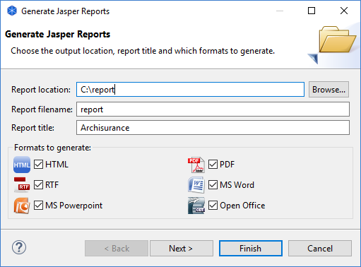

Jasper Reports 是世界上最受欢迎的 Java报告引擎。使用这个强大的报告工具，结合数据源并生成像素完美的文档，可以查看、打印或导出为各种文档格式。Archi可以使用Jasper报告模板以各种格式导出模型。
此选项可从主“文件”菜单的“报告->Jasper...”菜单项中获得。在模型树或视图中选择模型后，此菜单项将启用。在以下向导页面中提供详细信息：
Jasper报告向导页面 1
然后在下一个向导页面中，选择您喜欢的报告模板，如果您为报告模板提供了本地化的语言字符串，还可以选择语言环境：
Jasper报告向导页面 2
如果您在导出时选择“可自定义报告”模板，那么在创建新模型时，如果您的模型基于“可自定义报告”模型模板，则可以为报告的布局设置各种属性。有关详细信息，请参阅“从模板创建新模型”。
通过在基于“可定制报告”模型模板的模型中设置某些属性，您可以微调输出。当您基于“可自定义报告”模型模板创建新模型时，会有一个名为“_README_”的视图列出属性。
自定义报告属性
如果您希望创建自己的自定义Jasper报告模板，您可以将它们放在应用程序首选项文件夹中名为“jasper-reports”的文件夹中。您可以在 首选项 中更改此文件夹的位置。或者，您可以从“选择...”组合选项中手动选择模板文件（“main.jrxml”）。
自定义报告的示例文件夹结构：
C:\Users\Bagpuss\Application Data\Archi\jasper-reports
|------My Custom Report
|------main.jrxml
|------style.jrxt
|------other files...
有关创建自定义Jasper报告的更多信息，请参阅Archi网站的开发人员部分。
以下是 PDF 格式报告的示例：

生成的 PDF 格式Jasper报告的一部分